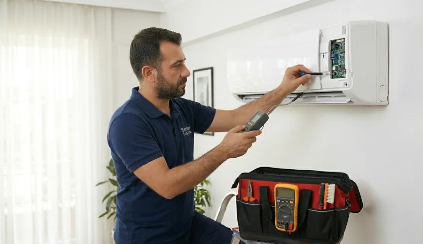

🔥 Yazın Sıcaktan Kışın Soğuktan Korunun: Sertler Soğutma Tarsus Klima Tamircisi ile Arızaları Unutun!
Tarsus’un kendine has iklimi, yaz aylarında kavurucu Akdeniz sıcaklarını ve yüksek nem oranını, kış aylarında ise keskin ama kısa süreli soğukları beraberinde getirir. Bu uç değerler arasında yaşam konforumuzu sağlayan en temel teknolojik yardımcılarımız kuşkusuz klimalardır. Ancak, bu cihazlar yoğun çalışma temposu ve çevresel faktörler nedeniyle zaman zaman arızalanabilir. İşte tam bu noktada, profesyonel bir Tarsus Klima Tamircisi bulmak, sadece konforunuzu geri kazanmak değil, aynı zamanda cihazınızın ömrünü uzatmak adına hayati bir önem taşır. Sertler Soğutma, bölgenin iklimsel dinamiklerini ve kullanıcı ihtiyaçlarını en iyi analiz eden firma olarak, "arızaları unutturan" bir hizmet anlayışıyla yanınızdadır.
Klima tamiri, sadece bozulan bir parçayı yenisiyle değiştirmekten çok daha fazlasıdır. Bu süreç, termodinamik bilgisi, elektriksel uzmanlık ve mekanik tecrübenin birleştiği bir mühendislik hizmetidir. Tarsus gibi tozun ve nemin yoğun olduğu bir bölgede, klimaların dış üniteleri ve iç mekanizmalarındaki korozyon riski oldukça yüksektir. Profesyonel bir Tarsus Klima Tamircisi olarak biz, Sertler Soğutma çatısı altında sunduğumuz hizmetlerde bu riskleri önceden öngörüyor ve kalıcı çözümler üretiyoruz. Cihazınız ister ev tipi bir split klima olsun, ister kurumsal bir VRF sistemi, uzman kadromuz her markanın teknolojik altyapısına hakimdir.

Bu makalede, klimanızın neden arızalandığını, bir Tarsus Klima Tamircisi seçerken nelere dikkat etmeniz gerektiğini ve Sertler Soğutma'nın bölgedeki lider konumunu nasıl koruduğunu detaylarıyla keşfedeceksiniz. Amacımız, sadece teknik bir servis sunmak değil, Tarsus halkının mevsim geçişlerini endişesiz ve huzurlu bir şekilde geçirmesini sağlamaktır. Arızaların canınızı sıkmasına izin vermeyin; çünkü Tarsus'un neresinde olursanız olun, profesyonel çözüm ortağınız bir telefon kadar yakınınızda.
Tarsus Klima Tamircisi Profesyonel Onarım Desteği
Klima onarımı, merdiven altı tamircilerin veya deneyimsiz kişilerin eline bırakılamayacak kadar hassas bir iştir. Modern klimalar, karmaşık sensör ağları ve hassas anakart sistemleriyle donatılmıştır. Deneyimli bir Tarsus Klima Tamircisi her şeyden önce cihazın arıza kodlarını doğru okumalı ve fiziksel belirtileri teknik verilerle harmanlamalıdır. Sertler Soğutma, profesyonel onarım desteği dendiğinde Tarsus'ta standartları belirleyen firma olmuştur. Bizim için her arıza, çözülmesi gereken bir bulmaca ve kazanılması gereken bir müşteri güvenidir.
Profesyonel bir Tarsus Klima Tamircisi desteği aldığınızda, cihazınızın sadece semptomları değil, hastalığın kaynağı da tedavi edilir. Örneğin, klimanız soğutmuyorsa bu sadece gaz eksikliğinden kaynaklanmıyor olabilir; sistemdeki bir kılcal tıkanıklık veya kondansatör zayıflığı da aynı belirtiyi verebilir. Sertler Soğutma teknisyenleri, en gelişmiş dijital ölçüm aletleriyle adrese gelerek, deneme-yanılma yöntemine başvurmadan nokta atışı tespit yaparlar. Tarsus’un nemli havasında en çok karşılaştığımız drenaj sorunları ve kart oksitlenmeleri, ancak bu profesyonel yaklaşımla kalıcı olarak giderilebilir.
Profesyonelliğin bir diğer boyutu da iş disiplinidir. Sertler Soğutma ekipleri, randevu saatine sadık kalarak, evinizde veya iş yerinizde çalışma alanını koruyarak hizmet verirler. Bir Tarsus Klima Tamircisi olarak sorumluluğumuzun bilincindeyiz; bu nedenle onarım sonrası cihazın performans testlerini yapmadan ve size gerekli bilgilendirmeleri sağlamadan adresten ayrılmıyoruz. Profesyonel onarım desteği, cihazınızın enerji verimliliğini korur ve sizi ileride oluşabilecek daha büyük maliyetli arızalardan kurtarır.
Sertler Soğutma ile Garantili Klima Onarımı
Tamir edilen bir cihazın birkaç gün sonra tekrar aynı arızayı vermesi, kullanıcılar için en büyük kabuslardan biridir. Sertler Soğutma, bu endişeyi tamamen ortadan kaldıran "Garantili Onarım" modeliyle hizmet vermektedir. Bir Tarsus Klima Tamircisi olarak yaptığımız her işleme, değiştirdiğimiz her parçaya güveniyoruz. Bu güveni, müşterilerimize sunduğumuz resmi servis formları ve garanti belgeleriyle perçinliyoruz. Tarsus halkı, klimasını bize emanet ettiğinde sadece bir tamir hizmeti değil, aynı zamanda bir huzur satın aldığını bilir.
Garantili klima onarımı süreci, Sertler Soğutma’nın kurumsal kimliğinin bir parçasıdır. Eğer onarım sonrası garanti süresi içinde aynı parçadan kaynaklı bir sorun yaşanırsa, Tarsus Klima Tamircisi ekibimiz hiçbir ek ücret talep etmeden sorunu öncelikli olarak giderir. Ancak, sunduğumuz işçilik kalitesi sayesinde bu tip geri dönüş oranlarımız oldukça düşüktür. Tarsus genelinde yaygın servis ağımızla, onarım sonrası destek taleplerinize de aynı hızla yanıt veriyoruz.
Müşteri memnuniyetini odağa alan bu garantili sistem, Sertler Soğutma ismini Tarsus’ta bir marka haline getirmiştir. Bir Tarsus Klima Tamircisi seçerken "Garantili mi?" sorusunu sormak, paranızın ve cihazınızın güvenliğini korumak adına atacağınız en önemli adımdır. Biz, parça değişimlerinde üretici onaylı ürünleri kullanarak ve işçiliğimizi teknik standartlara dayandırarak, klimalarınızın uzun yıllar boyunca performans kaybetmeden çalışmasını garanti ediyoruz.
Tarsus’un En İyi Klima Tamir Ustası
Ustalık, sadece bir meslek değil, yılların birikimiyle yoğrulmuş bir zanaattır. Tarsus’un en iyi klima tamir ustası olmak için sadece teknik bilgi yetmez; bölgenin suyunu, havasını ve klimaların bu şartlardaki davranış biçimini de bilmek gerekir. Sertler Soğutma bünyesinde çalışan ustalarımız, çekirdekten yetişmiş, çıraklığını Tarsus’un sıcaklarında yapmış, ustalığını ise binlerce başarılı onarımla kanıtlamış isimlerdir. Bir Tarsus Klima Tamircisi olarak ustalarımızın ellerindeki maharet, cihazlarınızın yeniden canlanmasını sağlar.
En iyi usta, en karmaşık arızayı bile en basit ve ekonomik şekilde çözen kişidir. Sertler Soğutma ustaları, müşteriyi gereksiz masrafa sokmadan, tamir edilebilecek parçayı onarmayı (örneğin kart tamiri veya valf onarımı) önceliklendirir. Bir Tarsus Klima Tamircisi ustasının vizyonu, cihazın verimliliğini fabrikasyon ayarlarına döndürmek olmalıdır. Ustalarımız, Arçelik'ten Mitsubishi'ye, Samsung'dan Daikin'e kadar her markanın kendine has teknolojilerini avucunun içi gibi bilirler.
Tarsus sokaklarında kime sorsanız, Sertler Soğutma ustalarının nezaketinden ve iş ahlakından bahsedecektir. "En iyi" olmak bizim için sadece teknik bir iddia değil, aynı zamanda bir dürüstlük simgesidir. Profesyonel bir Tarsus Klima Tamircisi ustası, cihazın başına geçtiğinde sorunu teşhis ederken müşteriyi de sürece dahil eder ve şeffaf bir iletişim kurar. Tecrübe ve teknolojiyi harmanlayan usta kadromuzla, Tarsus’un iklimlendirme sorunlarına son veriyoruz.
Sertler Soğutma ile Hızlı Arıza Çözümü
Klimanın bozulması, özellikle Tarsus'un Ağustos sıcağında sadece bir konfor kaybı değil, aynı zamanda bir sağlık riskidir. Özellikle yaşlılar, çocuklar ve hastalar için uygun oda sıcaklığı hayati önem taşır. Sertler Soğutma, bu aciliyetin farkında olan bir Tarsus Klima Tamircisi olarak, "Hızlı Arıza Çözümü" birimini kurmuştur. Adresinize ulaştığımız andan itibaren zamana karşı yarışıyor, sorunu dakikalar içinde teşhis edip müdahale ediyoruz.
Hızımız, sadece aracımızın hızıyla ilgili değildir; aynı zamanda donanımımızla ilgilidir. Sertler Soğutma servis araçları, Tarsus genelinde en sık karşılaşılan arıza senaryolarına uygun yedek parçalarla dolu birer "mobil depo" gibidir. Bu sayede bir Tarsus Klima Tamircisi olarak, parça beklemekle zaman kaybetmiyor, onarımı genellikle tek ziyarette bitiriyoruz. İster sabahın ilk ışıklarında ister akşamın geç saatlerinde olsun, hızlı servis taleplerinize Tarsus’un her noktasına yayılan ekibimizle cevap veriyoruz.
Hızlı çözüm, aceleci iş yapmak demek değildir. Sertler Soğutma’nın hızı, teknik uzmanlığın getirdiği pratiklikten kaynaklanır. Bir Tarsus Klima Tamircisi olarak biz, kronik arızaları bildiğimiz için arıza tespit sürecini çok daha verimli yönetiyoruz. Klimanızdan gelen o kötü koku, su sızıntısı veya devre dışı kalma sorunları, profesyonel dokunuşumuzla hızla tarih olur. Tarsus'un sıcakları sizi beklemez, biz de sizi bekletmiyoruz.
### Tarsus Klima Tamircisi Seçim Rehberi
İnternet ortamında veya sokak ilanlarında birçok tamirciyle karşılaşabilirsiniz, ancak doğru seçimi yapmak cihazınızın geleceğini belirler. Bir Tarsus Klima Tamircisi seçerken dikkat etmeniz gereken ilk kriter, firmanın kurumsal bir kimliğe sahip olup olmadığıdır. Sertler Soğutma, şeffaf iletişim kanalları ve resmi belgeleriyle bu kurumsallığı temsil eder. Rastgele bir tamirci çağırmak, cihazın garantisini bozabileceği gibi, yanlış müdahaleler sonucu kompresör gibi pahalı parçaların yanmasına da neden olabilir.
İkinci önemli kriter ise teknik donanımdır. Profesyonel bir Tarsus Klima Tamircisi, elinde sadece bir tornavidayla değil; dijital manifoltlar, gaz kaçağı dedektörleri ve ampermetrelerle adrese gelmelidir. Sertler Soğutma, teknoloji yatırımlarıyla ustalarının elini güçlendirir. Ayrıca, firmanın yerel bir firma olması da büyük bir avantajdır. Tarsus'u tanıyan, bölgenin elektrik şebekesindeki dalgalanmaları bilen bir servis, arızanın çevresel nedenlerini de doğru analiz eder.
Son olarak, müşteri yorumları ve referanslar en dürüst rehberinizdir. Tarsus’ta yıllardır hizmet veren Sertler Soğutma, binlerce mutlu müşterinin referansıyla yoluna devam etmektedir. Bir Tarsus Klima Tamircisi ararken sadece fiyata değil, sunulan hizmetin kapsamına ve firmanın geçmişine odaklanmalısınız. Biz, seçim rehberinizin tüm maddelerini başarıyla karşılayan, Tarsus’un güvenini kazanmış bir çözüm ortağıyız.
Sertler Soğutma Klima Kompresör Onarımı
Kompresör, klimanın kalbidir ve soğutma döngüsünün en pahalı, en kritik parçasıdır. Kompresör arızalandığında genelde birçok tamirci "bu cihaz bitti, yenisini almalısın" der. Ancak Sertler Soğutma, klima kompresör onarımı ve değişimi konusunda uzmanlaşmış bir Tarsus Klima Tamircisi olarak, size her zaman bir alternatif sunar. Eğer kompresör mekanik olarak sağlamsa ancak kalkış parçalarında (kapasitör, termik) sorun varsa, çok daha ekonomik yöntemlerle cihazınızı kurtarıyoruz.

Kompresör onarım süreci yüksek hassasiyet gerektirir. Sistemdeki eski gazın tahliyesi, vakumlama işleminin standartlara uygun yapılması ve doğru miktarda yağ şarjı, yeni veya onarılmış kompresörün ömrünü belirler. Sertler Soğutma teknisyenleri, bir Tarsus Klima Tamircisi olarak bu süreci fabrikasyon hassasiyetinde yönetirler. Özellikle inverter kompresörler gibi karmaşık sistemlerde, yazılımsal ve elektriksel kontrolleri eksiksiz yaparak cihazın performansını ilk günkü seviyesine taşırlar.
Tarsus’ta kompresör arızası yaşayan kullanıcılar için Sertler Soğutma, en güvenilir duraktır. Biz, cihazınızı hemen gözden çıkarmak yerine, teknik olarak mümkün olan her yolu deneriz. Bir Tarsus Klima Tamircisi uzmanlığıyla, kompresörünüzün neden yandığını da araştırıyoruz; eğer sorun elektrik tesisatınızda veya dış ünitenin konumundaysa, bunu düzelterek yeni parçanın da aynı kaderi paylaşmasını önlüyoruz. Kalbimiz (kompresör) sağlam attığında, serinliğiniz de kesintisiz olur.
Düzenli bakım ve doğru kullanım, arıza riskini azaltır ve cihazın ömrünü uzatır.
Tarsus Klima Tamirinde Orijinal Parça
Bir tamirin kalitesi, kullanılan malzemenin kalitesiyle doğru orantılıdır. Tarsus gibi sıcaklığın dış ünite sacını bile eritecek seviyeye geldiği bir bölgede, yan sanayi parça kullanımı büyük bir hatadır. Sertler Soğutma, her zaman orijinal yedek parça kullanımını savunur ve uygular. Bir Tarsus Klima Tamircisi olarak biliyoruz ki, ucuz ve kalitesiz parçalar hem cihazın enerji verimliliğini düşürür hem de diğer sağlam parçaların üzerine aşırı yük binmesine neden olur.
Orijinal parça kullanımı, özellikle sensörler, fan motorları ve genleşme valfleri gibi hassas bileşenlerde hayati önem taşır. Sertler Soğutma, Tarsus'taki geniş tedarik ağı sayesinde her markanın orijinal parçasına hızla ulaşır. Bir Tarsus Klima Tamircisi hizmeti aldığınızda, takılan parçanın kutusunu ve garanti belgesini görme hakkınız vardır. Biz bu şeffaflığı tüm müşterilerimize sağlıyoruz. Orijinal parça, klimanızın fabrikadan çıktığı mühendislik değerlerini korumasını sağlar.
Yan sanayi parçalar genellikle daha kısa ömürlüdür ve Tarsus’un yoğun neminde hızla deforme olurlar. Sertler Soğutma ile yapılan onarımlarda, cihazınızın diğer aksamlarıyla tam uyumlu parçalar kullanılır. Bir Tarsus Klima Tamircisi olarak hedefimiz günü kurtarmak değil, klimanızı yıllarca çalışacak şekilde restore etmektir. Orijinal parça yatırımı, aslında uzun vadede tasarruf etmenin en akıllıca yoludur.
Sertler Soğutma ile Uzun Ömürlü Klimalar
Hiçbir klima sonsuza kadar çalışmaz, ancak doğru bakım ve profesyonel onarımla bir klimanın ömrü 15-20 yıla kadar çıkarılabilir. Sertler Soğutma, sadece tamir yapmaz; cihazınızın ömrünü uzatacak stratejik müdahalelerde bulunur. Bir Tarsus Klima Tamircisi olarak biz, onarım yaptığımız her cihaza "Check-up" uyguluyoruz. Cihazın gaz basıncını, elektriksel çekim gücünü ve iç ünite hijyenini kontrol ederek, gelecekteki arızaların önüne geçiyoruz.
Klimaların ömrünü kısaltan en büyük düşman Tarsus’un tozudur. Filtrelerin tıkanması, iç ünite serpantinlerinin yosunlaşması cihazı yorar. Sertler Soğutma, onarım esnasında bu kirleticileri temizleyerek cihazın rahat nefes almasını sağlar. Bir Tarsus Klima Tamircisi tavsiyesi olarak; klimanızı mevsim geçişlerinde mutlaka profesyonel bir kontrolden geçirmelisiniz. Düzenli servis desteği alan bir klima, almayan bir cihaza göre %40 daha uzun ömürlü olur ve elektrik faturasında ciddi tasarruf sağlar.
Uzun ömürlü klimalar için kullanıcı bilinci de önemlidir. Sertler Soğutma ustaları, onarım bittikten sonra size cihazı nasıl daha verimli kullanabileceğinize dair ipuçları verirler. Örneğin; klimayı sürekli aç-kapat yapmamak, dış ünitenin önünü kapatmamak gibi basit önlemler cihazın sağlığını korur. Tarsus'un en güvenilir Tarsus Klima Tamircisi olarak, cihazlarınızı birer yatırım olarak görüyor ve onları en iyi kondisyonda tutmak için var gücümüzle çalışıyoruz.
#### Tarsus Klima Tamircisi Fiyat Listesi
Klima tamiri söz konusu olduğunda kullanıcıların en çok merak ettiği konu maliyetlerdir. Ancak, sabit bir fiyat listesi yayınlamak teknik olarak doğru değildir; çünkü her arıza kendine hastır. Sertler Soğutma olarak biz, "Adil Fiyatlandırma" politikası güdüyoruz. Bir Tarsus Klima Tamircisi olarak ücretlerimiz; arızanın türü, değişecek parçanın güncel döviz kuru bazlı maliyeti ve işçilik süresine göre şeffaf bir şekilde belirlenir. Tarsus genelinde en rekabetçi ve ulaşılabilir fiyatları sunmak için çalışıyoruz.
Onarım maliyetleri belirlenirken öncelikle detaylı bir arıza tespiti yapılır. Teknisyenlerimiz sorunu bulduktan sonra size bir fiyat teklifi sunar. Bu teklifin içinde parça bedeli ve işçilik açıkça belirtilir. Sertler Soğutma'da sonradan çıkan "sürpriz maliyetler" yoktur. Bir Tarsus Klima Tamircisi olarak, müşterilerimize en ekonomik çözümü sunmayı (tamiri mümkün olan parçayı değiştirmek yerine onarmak gibi) bir görev biliyoruz. Fiyatlarımız piyasa standartlarında olup, sunulan hizmetin kalitesi ve garanti kapsamı göz önüne alındığında oldukça makuldür.
Tarsus'ta bütçe dostu ama profesyonel bir servis arıyorsanız, doğru yerdesiniz. Biz, kaliteden ödün vermeden nasıl daha uygun hizmet sunabileceğimizin yollarını arıyoruz. Sertler Soğutma'dan alacağınız fiyat teklifi, cihazınızın ömrünü uzatacak profesyonel bir müdahalenin karşılığıdır. Bir Tarsus Klima Tamircisi olarak, her bütçeye uygun servis paketlerimiz ve ödeme kolaylıklarımızla Tarsus halkının yanındayız. Fiyat bilgisi almak için bizi arayabilir, cihazınızın şikayetine göre ortalama maliyetler hakkında ön bilgi edinebilirsiniz.
Sertler Soğutma Kart Tamiri Hizmeti
Yeni nesil klimaların tamamı, bir mikroişlemci tarafından yönetilen elektronik kartlar (anakartlar) ile kontrol edilir. Voltaj dalgalanmaları, yıldırım düşmesi veya nemlenme gibi nedenlerle bu kartlar arızalanabilir. Genelde birçok servis, arızalı kartı doğrudan değiştirmeyi önerir ki bu çok maliyetli bir işlemdir. Sertler Soğutma, kendi bünyesindeki elektronik laboratuvarında "Klima Kart Tamiri" hizmeti vererek sizi bu büyük masraftan kurtarır. Bir Tarsus Klima Tamircisi olarak teknolojiyi sadece kullanmıyor, onu onarıyoruz.
Kart tamiri, yüksek hassasiyetli lehimleme istasyonları ve devre analiz cihazları gerektirir. Ustalarımız, kart üzerindeki yanan diyotları, kapasitörleri veya işlemcileri tespit ederek orijinal yedekleri ile yenilerler. Sertler Soğutma'nın bu hizmeti, özellikle inverter klimaların pahalı dış ünite kartları için hayat kurtarıcıdır. Bir Tarsus Klima Tamircisi olarak bu uzmanlığımız, bizi bölgedeki diğer birçok servisten ayıran en temel özelliktir.
Tamir edilen kartlar, test stantlarında çalıştırılmadan cihaza montajı yapılmaz. Sertler Soğutma, kart tamiri işlemlerine de işçilik garantisi vermektedir. Tarsus gibi elektrik voltajının zaman zaman dengesizleştiği bölgelerde, kart arızaları kaçınılmaz olabilir. Ancak endişelenmeyin; profesyonel bir Tarsus Klima Tamircisi desteği ile kartınızın ömrünü uzatıyor ve cihazınızı çöpe gitmekten kurtarıyoruz. Elektronik bizim işimiz!
Kondansatör Değişimi Detayları
Kondansatör (kapasitör), klimanın motoruna (kompresörüne) ve fanına kalkış gücü veren küçük ama hayati bir parçadır. Tarsus'un aşırı sıcaklarında klimalar sürekli devreye girip çıktığı için kondansatörler zamanla kurur veya şişer. Eğer klimanızdan bir uğultu geliyor ama soğuk üflemiyorsa, sorun büyük ihtimalle kondansatördür. Sertler Soğutma, bu tip arızalarda en kaliteli, yüksek ısıya dayanıklı kondansatörleri kullanarak cihazınıza güç verir. Bir Tarsus Klima Tamircisi olarak bu basit parça değişimini bile en yüksek standartta yapıyoruz.
Kondansatör değişimi sırasında sadece mikrofarad (uF) değerinin tutması yetmez; parçanın voltaj dayanımı ve malzeme kalitesi de önemlidir. Sertler Soğutma teknisyenleri, cihazın etiketiyle tam uyumlu parçayı seçer. Bir Tarsus Klima Tamircisi olarak uyarımız; kondansatör değişiminin elektriksel bir işlem olduğu ve yüksek voltaj riski taşıdığıdır. Uzman olmayan kişilerin bu parçaya dokunması hem cihaza hem de kendilerine zarar verebilir.
Doğru kondansatör, kompresörün zorlanmadan kalkış yapmasını sağlar. Bu da motorun ömrünü uzatır ve enerji sarfiyatını düşürür. Sertler Soğutma, onarım esnasında cihazdaki tüm kondansatörleri (fan ve kompresör kapasitörleri) kontrol ederek zayıf olanları rapor eder. Tarsus'un en detaycı Tarsus Klima Tamircisi olarak, küçük parçaların büyük sorunlara yol açmasını engelliyoruz. Cihazınıza ihtiyacı olan ilk hareketi biz veriyoruz.
Sertler Soğutma Müşteri Sadakat Programı
Bizim için bir onarım hizmeti, uzun süreli bir dostluğun başlangıcıdır. Sertler Soğutma, Tarsus'taki sadık müşterileri için özel avantajlar sunan bir "Müşteri Sadakat Programı" yürütmektedir. Bizden daha önce Tarsus Klima Tamircisi hizmeti almış olan kullanıcılarımız, bir sonraki bakım veya onarım taleplerinde öncelikli servis sırası ve özel indirimlerden faydalanırlar. Amacımız, Tarsus halkının her ihtiyacında güvenle arayabileceği bir aile servisi olmaktır.
Sadakat programımız kapsamında, müşterilerimizin cihazlarının geçmiş servis kayıtlarını dijital ortamda tutuyoruz. Hangi parça ne zaman değişmiş, bir önceki arıza neymiş gibi bilgileri bilerek adrese gitmek, hata payını minimize eder. Sertler Soğutma, Tarsus'un yerel bir firması olarak komşuluk hukukuna önem verir. Bir Tarsus Klima Tamircisi olarak sadece teknik bir birim değil, aynı zamanda güven duyulan bir marka olmamızın sırrı bu müşteri odaklı yaklaşımımızdır.
Bizi tercih eden kurumsal firmalar ve bireysel kullanıcılar, Sertler Soğutma güvencesini her zaman hissederler. Sadakat programımız dahilinde sunduğumuz ücretsiz ön danışmanlık ve periyodik hatırlatma servisleri ile klimalarınız her zaman kontrol altında kalır. Tarsus’un en çok tercih edilen Tarsus Klima Tamircisi olmamızı, bize güvenen ve bizi başkalarına tavsiye eden değerli müşterilerimize borçluyuz. Siz de bu ayrıcalıklı dünyanın bir parçası olun, mevsimlerin tadını çıkarın.
Hemen Servis Talebinde Bulunun
Arıza tespiti, bakım veya onarım için aynı gün içinde servis yönlendirebiliriz.
Sıkça Sorulan Sorular
Klimanın hiç çalışmamasının birkaç sebebi olabilir: Elektrik besleme hattındaki bir sigorta atmış olabilir, kumanda pilleri bitmiş olabilir veya cihazın anakartı zarar görmüş olabilir. Sertler Soğutma teknik ekibi, dijital ölçüm aletleriyle gelerek sorunun kaynağını hızla tespit eder. Profesyonel bir Tarsus Klima Tamircisi desteği almadan kablolarla oynamamanız güvenliğiniz için önemlidir.
Yaz aylarında klimanız soğutma yaparken dış ünitedeki bağlantı borularında terleme olur ve bu normaldir. Ancak, kış aylarında (ısıtma modunda) dış ünite buz çözme (defrost) yaptığı için alt kısımdan su akıtması beklenen bir durumdur. Eğer su sızıntısı iç üniteden geliyorsa, bu bir drenaj tıkanıklığı belirtisidir ve bir Tarsus Klima Tamircisi müdahalesi gerektirir. Sertler Soğutma bu tıkanıklıkları kimyasal temizleyicilerle hızla açar.
Arızanın türüne göre değişmekle birlikte, parça değişimi veya gaz basımı gibi işlemler genellikle 30 dakika ile 1 saat arasında tamamlanır. Kart tamiri veya kompresör onarımı gibi daha karmaşık işlemler için cihazın bir parçası atölyeye alınabilir ve süreç 24-48 saat sürebilir. Sertler Soğutma olarak hedefimiz, Tarsus’taki en hızlı Tarsus Klima Tamircisi hizmetini sunmaktır.
Kesinlikle. Sertler Soğutma tarafından değiştirilen tüm yedek parçalar ve uygulanan işçilik hizmeti firmamızın garantisi altındadır. Size teslim edilen servis formunda garanti süreleri ve yapılan işlemler açıkça belirtilir. Bir Tarsus Klima Tamircisi olarak güveninizi sarsmayacak kurumsal bir hizmet sunuyoruz.
Sesin kaynağı iç ünite fanındaki bir balans bozukluğu, dış ünite motorunun ayaklarındaki gevşeme veya gaz dolaşımındaki bir tıkanıklık olabilir. Sürtünme sesleri mekanik parçalara zarar verebilir. Bu durumda klimayı kapatmalı ve profesyonel bir Tarsus Klima Tamircisi çağırmalısınız. Sertler Soğutma, ses izolasyonu ve mekanik onarım konusunda uzmandır.
Hayır. Klima sistemleri kapalı devrelerdir ve bir kaçak olmadığı sürece gazı bitmez. Eğer gaz eksilmişse sistemde bir sızıntı var demektir. Sadece gaz basıp gitmek çözüm değildir; sızıntının bulunup tamir edilmesi gerekir. Sertler Soğutma, gaz dolumu öncesi mutlaka kaçak testi yapar. Tarsus'un dürüst Tarsus Klima Tamircisi olarak sizi gereksiz masraftan koruyoruz.
Evet. Tarsus merkez mahallelerinden en uzak köylere kadar geniş bir servis ağımız mevcuttur. Sertler Soğutma'nın mobil ekipleri Tarsus’un her sokağına hakimdir. Nerede olursanız olun, profesyonel Tarsus Klima Tamircisi desteğimiz size ulaşır.
Bu sorunun cevabı cihazın yaşına ve arızanın maliyetine bağlıdır. Eğer tamir maliyeti yeni bir cihazın fiyatının yarısını geçmiyorsa ve cihazınız 10 yaşından küçükse tamir mantıklıdır. Sertler Soğutma ustaları, size bu konuda en dürüst ve ekonomik tavsiyeyi verirler. Bir Tarsus Klima Tamircisi olarak önceliğimiz sizin menfaatinizdir.
İnverter klimalar daha karmaşık elektronik sistemlere sahiptir ve uzmanlık gerektirir. Ancak Sertler Soğutma, inverter teknolojisi konusunda eğitimli kadrosuyla tüm markaların tamirini yapabilmektedir. Bir Tarsus Klima Tamircisi olarak inverter kart ve kompresör onarımlarında bölgenin lideriyiz.
Web sitemizdeki telefon numaralarından, WhatsApp hattımızdan veya sosyal medya hesaplarımızdan bize ulaşabilirsiniz. Çağrı merkezimiz talebinizi alır almaz en yakın Tarsus Klima Tamircisi ekibini size yönlendirecektir. Sertler Soğutma, serinliğinizi geri getirmek için hazır bekliyor.
Sonuç ve Uzman Görüşü
Klima, Tarsus gibi sıcak bir coğrafyada sadece bir cihaz değil, yaşam kalitesini belirleyen en önemli unsurdur. Arızalanan bir klimanın doğru teşhis ve kaliteli parçayla onarılması, sadece o anki serinliği değil, yıllar sürecek bir konforu garanti eder. Sertler Soğutma, yılların getirdiği tecrübe, teknik donanım ve sarsılmaz müşteri memnuniyeti ilkesiyle, Tarsus'ta iklimlendirme denilince akla gelen ilk isim olmaya devam etmektedir.
Bir Tarsus Klima Tamircisi olarak bizim en büyük başarımız, onardığımız cihazların uzun yıllar boyunca sorunsuz çalışmasıdır. Biz, işimize bir tamirci gözüyle değil, bir çözüm ortağı gözüyle bakıyoruz. Tarsus'un kavurucu sıcaklarında veya serin kış akşamlarında klimanızın size eşlik etmesini istiyorsanız, onu uzman ellere teslim edin. Unutmayın, profesyonel müdahale her zaman kazandırır.
Sertler Soğutma ailesi olarak, Tarsus halkına hizmet vermekten gurur duyuyoruz. Cihazlarınızın performansını artırmak, arızaları hızla gidermek ve sizlere daha ferah yaşam alanları sunmak için buradayız. İhtiyacınız olan her an, en güvenilir Tarsus Klima Tamircisi olarak bir telefon uzağınızdayız. Sağlıklı, huzurlu ve ideal sıcaklıkta günler dileriz! Sertler Soğutma ile iklim kontrolü her zaman sizin elinizde.